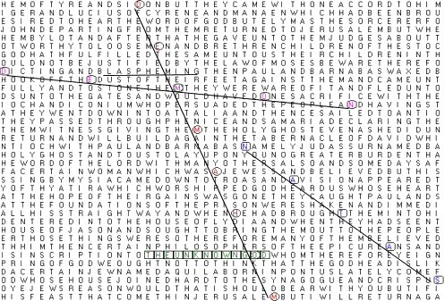

I am accepting charitable donations,.
Elyon (Biblical Hebrew עליון; Masoretic ʿElyōn) is an epithet of the God of the Israelites in the Hebrew Bible. ʾĒl ʿElyōn is usually rendered in English as “God Most High”, and similarly in the Septuagint as ὁ Θεός ὁ ὕψιστος (“God the highest”).

Strange things happen to me when I get high. Very strange things–things you probably never would have believed, had you not somehow had some active role in … either creating or experiencing them. That’s worked quite a bit into my mythology of the interaction between the “Assim” and this story of dissecting the “Adamic Language of Eden” and how it relates to words like "Manna from Heaven" (which combines Man as in “the Son of” and the chemistry element for table salt, like Tina and Bath Salt) … and in those colloquial and modern words for amphetamine (am P, see “Hilt” we are in the place where “urine becomes extinct”) … perhaps more obvious of a reference to what I consider the “S of the times” … total omnipotence guiding the flow of our society and “how we name things” all the way from NaCl to “seeing Him” in connection to Exodus.

“Hallucinate” … another one–as if there was a word that didn’t somehow relate to and “jive” with this singular story about the apocalyptic Revelation that we live in a place designed for a very specific purpose … write down to every letter and every “secming mistake.” How “ALL” and “uc” … someone … salting the “te” of Jupiter and carpenters and "Har-Wer sois the key …"
Ignoring these things might seem like some sort of salve, as if this story that is the very clear purpose of not only every religion and every word but also every one of our lives in this place is some kind of “mire” on something like the august importance of the “story of Jesus Christ” or the smile on your children’s faces as they open boxes of gifts under their Christmas trees every year.
Of course that’s far from the truth, it’s a blind hubris and what I’ve come now to realize is nothing more than a gigantic lie–some kind of thing you must believe is a cover story for you and perhaps for your generation as you ignore something far, far more important. You are watching the fall of civilization–participating in it actively through your silence; the end of not only “urination” but perhaps the “you are I nation” and with that the place and time that once used the Nintendo DS and Sirhan Sirhan to protect the entirety of the Universe from unspeakable horrors like “the end of words and hands” and more closely associated to that particular Manchurian Candidate the end of freedom and free thought and the imprisonment of every hand in some kind of strange search for “easter eggs” and the fabled Afikomen at the end of “over the rainbow.”
I imagine strange things happen to you also, the world appears to stop functioning normally; often times I wonder if it is literally the end of the world–and sometimes I cry a little bit inside truly believing we might all be better off … if it really was that–rather than the beginning of an eternity of “living in a doll house” … one that appears today to be far more grotesque and “twisted mirror filled” than I ever would have imagined.

This is the cover of my latest published near exact copy of all my emails; it's back cover has some cute stuff about that purple-dinosaur who is obviously colour inverted "Nessie" and her connection to Monster.com (more on that in the next series of emails), communism, and the "Un-LOCK-E" key linking of course the gigantic image connecting every video game system to the state of "TENNESSEE" and bunches sof historical and references to the three letters "NES" (both forwards and Taylor Momsen) perhaps keeping you from "SEE"ing NES and Xbox in that state are a "clue" you're in the Matrix.
I of course made a gigantic effort to point out John Locke has a connection to the words of Thomas Jefferson during his Revolutionary Declaration suggesting God himself is guaranteeing "life. liberty and the pursuit of happiness ..." and now add in yet another Connect-IC and the Universal Truth .... John Maynard Keynes also contains both "NES" and "NARD." These specific words just sounded so perfect, I'm repeating them again.
ONE NATION OVER LOCKE, INVISIBLE ... AND NOT EVEN REMOTELY SMITTEN WITH WHISKY, "NESSIE KISSES" OR "SILICON SEX." Alright I threw that in there for no reason. In the meantime I hope you put this stuff on the news before RHEA's ADAMGATE opens the damned connection with the great Flood of Noah and "seeing da luv:" what you are doing here cannot be allowed to continue. It's nothing, you're doing nothing--making Hell--and pretending you think it's ... "just like ... nayesturnrorday."
PDF’s of the “front 123 chapters” … in Adamic “SLAM DA Y to skies.” Everyone on the planet appears to be criminally and pathologically insane. Feel stupid, let it be contageous--you literally "don't care" about the most important thing(s) possible--namely freedom, immortality, and being thanked forever for achieving and delivering both of those things to ... the future. Seriously, you all look "absolutely insane."
Get down with the sickness--not seeing "illic" and "sickle" in Illuminati ... it's ... insane. Not seeing this message and the tying together of nearly every piece of modern art, song, and ... ancient literature and religion ... ON THE NEWS, it's insane. By "GREEN WITCH MEAN TIME - 8:00" (10 AM) ... the next time I see an "ELE" on Television (this not being on the news) hopefully you will connect the green star of British Petroleum to ... an entire world not caring that "OIL IS NOT SCARCE" and that means your taxes and everything you are doing in this place is basically ... "ccompletely fake" ... to the Egyptian God of Silence's skin; and see... I'm green and sick of your ... silence.
I recently distributed an … “introduction” to this book to a subset of this audience, you can read it here if you didn’t receive it. If you want to get more emails from me and a special cupcake you should join this group.
There is always the possibility that entire websites, all of my books, the entirety of the internet and even this entire timeline could just up and vanish one day–if you care at all about “things like that” and believfe me when I tell you that your memories and the “e-snake-in-the-sky” are more malleable and vulnerable than you think … it would be helpful if you would download the above PDFs and burn them to optical disk. Obviously the more of you that do that, the better–this is not a test.

I loved this place when I was growing up. I loved America and I loved the freedom and the progress that I’d read about and studied in history. I loved our generation, and our world; how far we’d come from apartheid … and less (less because I never thought we could be so evil) from the twisted kind of torture that we don’t even really associate with the dungeons of the middle ages. Torture that I was happy George W. Bush made a public statement of not only saying was against the law but “un-American” when it came up in the “water boarding” scandal that immediately followed the tragedy of 9/11 and the thing … the very illegal and “un-American” thing we all probably associate with “rendition” and I personally associate also with the word “rendezvous.” You might see I’ve spend some time looking for words that begin with “rend” …
as I render one more time to the world a very pertinent connection between our modern computing lingo for things like “ATI graphics cards” and the letter C and the word “sea” backwards in Matthew 22:21.
I’ve long held that the original clear intent of that phrase was more than George Bush seniors words related to “read my lips” … that we live in a place where it’s an evil horror to ignore that oil is not truly scarce, nor food; nor anything but honesty at this point–and that our lack of honesty as a group has taken what I’ve called “the original lie” and truly strapped it to your backs–your cross to bare today.

I’ve of course conrected the word “first” as in, the original response to a long and sordid introductory post to some forum–this place, in the form of a planet and it’s contents–to a bit of “intersection” (as in … of the “IC” of Jericho and the “UT” of our last email) and you’ll note that not every state has been “decoded yet” but here we’ve added “Connecticut” to the list that Yehoshan has “decoded” in this strange world of … well I know personally that the states and the government here is a map to something far more interesting and usable than the simple thing we see. Something that takes this very intentionally broken slave state … once the bastion and beacon of the free world on the forefront of “actual democracy” and today … nothing more than a sick joke representative of the hidden darkness and slavery that has left us … in complete and utter silence in the face of the most sensational scandal the Universe has ever seen.

Ida Pauline Rolf (May 19, 1896 – March 19, 1979[2]) was a biochemist and the creator of Structural Integration or "Rolfing". Structural Integration (or Rolfing) is a type of manual therapy that aims to improve human biomechanical functioning as a whole rather than to treat particular symptoms.[4]Rolf began developing her system in the 1940s. Her main goal was to organize the human bodily structure in relation to gravity. Rolf called her method "Structural Integration", now also commonly known by the trademark "Rolfing".[5]
To note, I've co-opted this term to apply to molecular mathematical operations--something like "enzymatic logic gates and registers" that you'd imagine would be created to deal with actual molecular computing. In my mind the "jump" from basic binary operations to ... something more advanced is akin to the black box from the movie Sneakers--the end of "DES" by imbecilic morons; and I do hold that characters name either was or should have been Kermit.
All told, we’ve named IOWA.S.Y and its “Cock-us” and Kansas and it’s very pertinent tie to the land of Oz and the penultimate goal of Asgard and this last-last email, just 2 before this one “INDIANA.” Of course I’ve spent significant time decoding the ICA if Metallica and Citrix and the possible reasons “Ida Pauline Rolf” is linked to my home state of Florida and IR certain there are very few people on Earth that don’t see Adolf is connected to not “identifying our Eye.” South Carolina will always hold a special place in my heart, and those two letters, stand for something called “sacred consciousness” that hopefully we let us see that along with ending hunger and disease and … slavery … not losing words here will also help us to see how “pain” is easily eradicated nearly instantly as soon as we acknowledge the causal link between “Pa” and “Ra” and the words, “let it rain.”

Back on track, there’s a very special key to me–connected to the short and … strangely well seen piece I wrote in California, from the throes of a “treatment center” that I believe I am not only not wrong to suggest needs to be spoken more clearly, but to point out that you yourself have significant culpability ignoring the “New American Standard” for torturing Jesus Christ. This key is something I recall nearly perfectly, and that’s the verse of John 12:1 which once spoke about Jesus feet’ being washed in fine wine … during my lifetime and as close to this actual event occurring as I can fathom … it appears that this verse was literally changed (in a way I’ve described as perhaps the source of darkness, in a way that didn’t require your entire lives to be relived because of a tiny little word change, but one that might make you wake up and wonder if anyone else has heard the song called “Ramble On” by LED Cavendish/CAVENDVILESHH) … to “fine nard” which of course links almost perfectly to my idea that the Pillar of Salt from the story of Lot and his wife and … the numerous other Biblical references to salt and light … well, salt on a road is a good thing–it keeps us from spoiling during the winter. All told, salt seems to be a ubiquitously “good thing” for immortal things and notoriously bad for things that are “in the Universe” and … alive. I think it’s clear this thing we are experiencing is uniquely designed above to keep us from the horrendous mistake of not understanding any of this message about space mold and ending pain and hunger and somehow thinking it’s OK to damn “people just like ourselves” to be … becoming new young people who very much would resent aged and disgusting demons in Heaven ever suggesting they were the same people.

Six days before the Passover, Jesus came to Bethany, where Lazarus lived, whom Jesus had raised from the dead. 2 Here a dinner was given in Jesus’ honor. Martha served, while Lazarus was among those reclining at the table with him. 3 Then Mary took about a pint[a] of pure nard, an expensive perfume; she poured it on Jesus’ feet and wiped his feet with her hair. And the house was filled with the fragrance of the perfume.
John Adams 12:1
“You are the salt of the earth. But if the salt loses its saltiness, how can it be made salty again? It is no longer good for anything, except to be thrown out and trampled underfoot."
Matthew 5:13
If you don’t think “it’s been awhile since I wasn’t addictionary” and literally seeing stories of “drugging Jesus” encoded in everything from the book of John to the song “Jeremiah was a Bullfrog” … are bright shining clues that you are wrong beyond belief to think it’s a good idea to starve babies and fail to cure sickness and … and you think you’re going to get away with actually physically drugging me so you can blame your lack of action on that–you’re sorely mistaken in the place where America fails to … continue.
was a good friend of mine
I never understood a single word he said
but I helped him a-drink his wine
Anyway, it’s more than clear to me that this … probably very seminal piece of in the history of these next few words … and it’s probably clear it was originally intended to "shut down the dissemination of this original FIRST piece which connected the IRS to the Boston Tea Party to … the current Tea Party and it’s link to the next messages “water” and “multi-room-party” … and of course these seminal words:
TAXATION IS THE FT

If you aren’t following along that well, that’s the actual meaning of the more famous and less descriptive words “Render to Caesar what Caesar is due” and also a “Masters of Orion” sort of connection to the word/star that I think now the entire world associates with “the foot of our Christ” and of course that’s the tacit link between Rigel and our right hands and uh … to me it’s pretty clear that in the old style of ELE ME NT to EXODUS we are watching God link together the Spanish number nine to “Evita” and the message here that we are “rigging everyone living” (as opposed to El) to … hopefully care about things like fake taxes and fake oil and fake diseases and a world, any word–not just their home planet or the container of all other virtual Hells …
Oil and food are not only not scarce; they are infinitely available--you literally have no excuse for perpetuating this disgusting hell of ... on top of that you are not destroying privacy, free speech, safety, and any hope anyone has ever had of having any access to ... what civilization needs to survive--which is ... an entire world that is not pathologically insane.

the clear intent, of course, is to … in no uncertain or ambiguous terms RENDER TO OUR PRISON PLANET’S SKIES THIS IMAGE which I magically “incant” as something like the “Cover Art of …” the Holy Coda of the Matrix.
“FIRST AND FEDERAL” is newsworthy, as is Nard and Manna and Tina and … more to the point the fact that the entire world is sitting by in silence watching these words being written and ignoring … “HELL ITSELF” and that their silence is absolutely the reason “HELL IS CONTINUING” instead of being destroyed by the other Jesus, which of course is connected to “SOIS THE KEY” …

More on “rigging everyone living” and the reason EV (as in the beginning of “everyone” is somehow tied to America and the word and letter at the very beginning of this email, “YO N” … as I detail the story of a bunch of tools and toys that I think you should already have; and more to the point should be forced to use to make something better than you that would never allow this place to continue as it is in it’s current state.

I’ve long associated this following “Bible Code” example with something like “searching for sacred Heart” … it’s a literal arrow in each of the five books of the Torah (perhaps now to acred heart) … winding up in Leviticus, which is the book ass ociated with “the giving of the Law.”) A long, long time ago I wrote a piece (it’s near the bottom, that’s some OLD writing, don’t fault me) about how this set of books might be something like a little map to our timeline, when I connected Leviticus to something like 0 A.D. between the “before ball clubs” and “after dickface” label of the timeline. At that time I said something about folding time over that point, and seeing very clearly that the pyramids of Exodus connect to the dollar bill an the Illuminati and this message about “superimposed ball club game on top of democracy and freedom” is an affront to … civilization/humanity/anything worthwhile anywhere in the cosmos, the heavens or Earth. I wasn’t so sure or clear about any of these things until I’ve seen what looks like little more than … “clubs and teams” vying to make the biggest and best pyramid possible so they can be the most well self-enslaved group of people in charge of “doing whatever none of them and nobody else would like to do” which is the metaphorical and physical thing described by “pyramids” which is more than a sad commentary on our social structure… it’s what you are and what you seem to want.
K, of course, is a glyph of arrows pointing to the heart of Creation, connecting the “Western Wall” and … Heaven and Hell. Like “RICK AND MORTY” it’s about “seeking” … here and now… as a time filled with things and people who matter enough not to walk around lying to yourselves, to the world at large, and to the future. One more time, RICK reads as “here, I seek A” (as in Adam and Ascension) and connecting MOR to the Latin for love and … of course, “message on news OR,” as in the OR of Mor’t d’ART.
When my critics find a message about the assassination of a prime minister encrypted in Moby Dick, I’ll believe them.
(Newsweek, Jun 9, 1997)
Briefly, this Bible Code is also news, Richard Dawkins idiotic response about Moby Dick is also news, as is the connection to the American Mafia and “dickface” … and the late insane Junior Soprano.
This interpretation of “the Torah” as a map to the escape from Tartarus spoke about a recursive process that I’ve recently written about as being the meaning of the “NES” of “it’s really not a game” in honestly and Tennessee. The implication is that some sort of “gigantic disruption” of silence and stsupidity was needed to escape from … what now appears to be “re-living” the period of Genesis and Exodus over and over and over again. Long ago, back in 2014; the phrase was uttered from the sky “this is your Numbers exit” today I am looking at a message that has many times over now proven we are in the “Fifth book” connecting Drops of Jupiter (Jupiter is said to contain deuteron which is the fuel of solar fusion) to Tokamak Fusion Reactors and the “torsion fields” that are now just as related to the Torah as Deuteron is to Deuteronomy.
I see “boom” this is newsworthy.

NOTING "Z HIV AND E"
Zhe (Ж ж; italics: Ж ж) is a letter of the Cyrillic script.
It commonly represents the voiced palato-alveolar sibilant /ʒ/ (listen), or the somewhat similar voiced retroflex sibilant /ʐ/ (listen), like the pronunciation of ⟨su⟩ in "treasure".
Zhe is romanized as ⟨zh⟩ or ⟨ž⟩.
It is not known how the character for Zhe was derived. No similar letter exists in Greek, Latin or any other alphabet of the time, though there is some graphic similarity with its Glagolitic counterpart Zhivete ⟨Ⰶ⟩ (Image: ) which represents the same sound. However, the origin of Zhivete, like that of most Glagolitic letters, is unclear. One possibility is that it was formed from two connecting Hebrew letters Shin ⟨ש⟩, the bottom one inverted.[citation needed]
In the Early Cyrillic alphabet the name of Zhe was живѣтє (živěte), meaning "live" (imperative).
c. little piece
Con este pedacito de queso que tengo suficiente para un refrigerio.This little piece of cheese will be enough for a snack.
{kind=link}
The Bible Code in question uses am "equidistant letter skip" of 50 for all of the arrows pointing to the book centered around the birth of Adam except for the book of Deuteronomy, which is the “life and death of Moses” and that particular book uses a skip of 49. I’ve always seen the 50 states, and my … personal meaning of “fifty” (it’s code for OMGZA) … and now here’s someone else’s writing (reproduced below) about that code.

“Do not think that I came to destroy the Law or the Prophets. I did not come to destroy but to fulfill.” Matthew 5:17
In my introduction to the Bible code, I strove and completed a few versions of my own ELS (Equidistance Letter Spacing) computer code. To test out the program, I used the first “hidden” message current and ancient bible decoders point out. Beginning in Genesis 1:1 and Exodus 1:1, start with the first time the Hebrew letter Taw appears, and count every 50th Hebrew letter consecutively. We found in the previous article, both books have the word Torah encoded at the beginning.
Satisfied with the program, I began looking for the same codes in Leviticus, Numbers and Deuteronomy, but did not find the word Torah hidden in the first verses. In Leviticus at an ELS of 50, the word Torah first begins in chapter 4, verse 30. The ancient decoders, like me would ask, Why?
The ancient decoders investigated other words which could be formed from Leviticus 1:1 and arrived at the following using an ELS of 8.

The sacred name for God.
In the book of Numbers, starting at each Taw at an ELS of 50, the encoded word Torah does not begin until verse 51 of the first chapter. Once again, we would ask why, but the stubborn and/or astute kept digging. They found, if you start with the third Hei (ה) in the first verse and use an ELS of 50, you will find the word Torah, but written backwards.

In the last book of Deuteronomy, which I prefer the Hebrew name Debarim, signifying words from the heart, the first time the word Torah is encoded with an ELS of 50 is in the 42nd verse of the first chapter. If we found Torah in reverse in Numbers with an ELS of 50, symmetrically thinking, we should see the same in Deuteronomy, but this does not occur until chapter 5 and verse 16. Puzzling.
I think the following shows us a characteristic of God. Whenever we think we see a pattern in life, or history, or astronomy, things change or there is something different to keep us guessing. Either a test of faith or a test of our drive for knowledge and understanding, or whatever the reasoning the ancients continued.
If the ELS is changed to 49, then the word Torah in reverse is found in verse 5 of the first chapter. Now, there is a need to explain why the ELS was altered from 50 to 49, and why verse 5 instead of verse 1. According to the Talmud, and if you actually read the first four verses, it seems to be an introduction to Deuteronomy, so verse 5 is considered the actual start. I’ve seen some mathematical explanations for the number 49, but I don’t have a good feel for the reason 49 works.
Creatively, one has summarized this “coincidence” as Torah forward and backwards points to God.

Now, comes the time for me to interject some of my other tools to this ELS study. In my few investigations of ELS, I am okay with using it, as long as it aides me in understanding more about God and the authenticity of His word. Honestly, I don’t need the ELS to see that the Bible is woven together, and with the ELS code in my Bible study tool box, I think God may allow me to see some cool things.
Using ELS, we have found a very interesting view on the Torah, but here is a little extra. The first letter of the Torah is the Beth and the last letter is the Lamed, which forms Leb the word for heart. Which is why I chose the featured image for this article to summarize this study. The Torah is wrapped around by the heart. We are to apply this to our heart as the two greatest commandments Jesus taught come from the Torah. In short, Love God and Love your Neighbor.
There is another form of coding I’m learning called Atbash, which I wish to apply to the word Leb, the ending and beginning of the Torah. Atbash is a letter replacement method to form a new word. There are 22 letters in the Hebrew Alphabet, but if we divide them by two groups and line them up our coding becomes:

Replacing the Lamed (ל) with the Aleph (א), and the Beth (ב) with the Mem (מ), we form the word Em (אמ), which is an ancient word for binding, glue, pillar, or a word I will save for last.
In primitive Hebrew, the Aleph was drawn as an ox head and the Mem was drawn as water (Mem actually means water). According to Jeff Benner “Em” pictorially represents: glue was made by placing the hides and other animal parts of slaughtered animals in a pot of boiling water. As the hide boiled, a thick sticky substance formed at the surface of the water. This substance was removed and used as a binding agent.
To apply this, God said through Jeremiah:
“I will put My law in their minds, and write it on their hearts; and I will be their God, and they shall be My people.” Jer 31:33b
Here’s some stuff about names like Mohammed and Jesus in Bible Code which looks super fancy,

… and of course my favorite, over Isaiah 52:13 which ostensibly is very much about me and about the Second Coming, with my full name encoded over “Jesus, Mars, Saturn, Christ and Zeus” in … I think all five of the Books of Torah. I imagine this is unheard of, it’s probably also news. Frankly, you should also take it as a “sign” … I’m not going away. You can also see the letter “Y” pretty clearly, that’s the book of Exodus.
It is why, ending slavery; that’s why we’re here–that’s why this isn’t going away–and that’s why there’s no getting around "using the news to save … free speech and thought.
See, my servant will act wisely[a];
he will be raised and lifted up and highly exalted.
14 Just as there were many who were appalled at him[b]—
his appearance was so disfigured beyond that of any human being
and his form marred beyond human likeness—
15 so he will sprinkle many nations,[c]
and kings will shut their mouths because of him.
For what they were not told, they will see,
and what they have not heard, they will understand.


This image was originally linked in the piece I called “the Rod of Adam” which was about … the dream of Joseph and the rising of Atlantis.
{kind=link}

Here is a completely unrelated link to a novel called “Seveneves” by Neal Stephenson about the moon blowing up due to some sort of Armageddon/natural disaster and in that novel it did not destroy only the state of Florida.
Florida is also not where all of the people fundamentally responsible for the global silence in the skies currently reside. Some of them are dead already. Neal currently works for Magic Leap, which is headquartered in Plantation, FL–which is where I was born and raised.
There are currently no asteroids headed directly for Florida.

A quick search for the phrase “1 minute west of Bucharest” does in fact yield an actual place in Bucharest and a reference to a state or road or something that read something like “Florida and …” and usually that’s a good thing. Bucharest, on … “when.” Now I see “ILFOV county” which has nothing to do with PRouli.
Florida, I’m not “rolfing” … zing.
To note, I had planned on retelling a story of a "hallucination" that I lived through in North Carolina in 2014--this "hallucination" consisted of a story about a time machine built into "the moon" that somehow for some reason resulted in "the moon being blown up" repeatedly, over and over again. I recall "the spirit in me" undoing that, over and over again--as I literally listened to the sound of an explosion, over and over again. This ancient memory was "brought up again" while i was in Tampa; and additional context was added suggesting that someone or something was "searching" for a copy or version of "Earth" that was either "in reality" or somehow more closely tied to the supposed fictitioius or surreptitious time travel "technology" hidden ... "in the moon." It was suggested in Tampa that this thing was destroyed; and that spurned some emails that I don't fully recall the context of.
This was, of course; a most Holy-sacrament-in-the-Universe related hallucination. You also, are a drug related hallucination that I often now-a-days equate to the "snake" outside the house of Beetlejuice, and also to the recent change of the Sagittarian constellation connected to the Birth of Jesus Christ to something about a man fighting with a snake not to understand "Ophicus." With o'pen hands; and no arms--put this on the news.